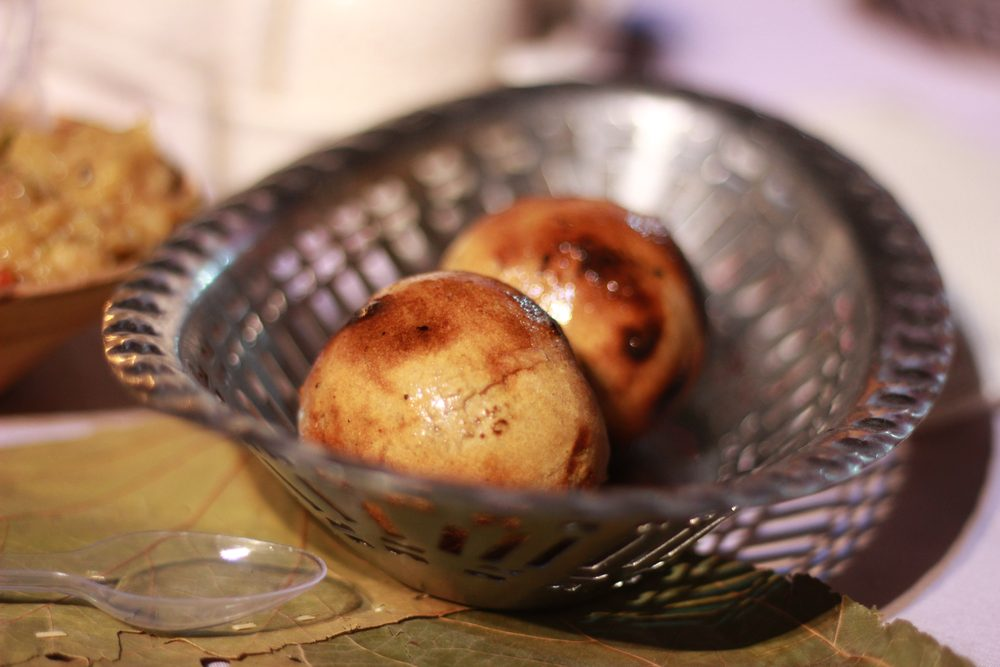

Baati Chokha
Plain wheat balls baked till they crack, drowned in ghee, with a smoky mash of brinjal, tomato and potato

Contains: milk, gluten, mustard
Ingredients
Quantities for 4.
- 400g Atta
- 8 tbsp Ghee4 into the dough, 4 to drown the baatis at the end
- 1 tsp Ajwain
- 1/2 tsp Nigellaoptional
- 1 large, about 400g Eggplantthe big round kind, not the slim purple one
- 3 medium Tomato
- 2 medium, about 250g Potato
- 8 cloves Garlic4 roasted whole in the brinjal, 4 raw and crushed
- 4, finely chopped Green Chilli
- 1 small, finely chopped Onion
- 3 tbsp Mustard Oilraw, stirred into the chokha at the end
- 1/2 cup, chopped Coriander Leavesoptional
- 1 Lemonoptional
- to taste Salt
- about 200ml, for the dough Water
Cookware
oven, stovetop
Checked against the ingredient list for ten allergens: milk, egg, fish, crustaceans, tree nuts, peanuts, sesame, mustard, soy and gluten. Brands vary, so read the label on anything new to you.
Before you start
- Baati chokha is Bhojpuri food: Purvanchal first — Banaras, Ghazipur, Ballia — and western Bihar across the line, which is one kitchen on both sides of it. Varanasi is where you eat the version everyone else is copying.
- A baati is not a litti. There is no sattu filling, so the dough carries the whole dish: knead 4 tbsp of ghee into the flour before any water goes in, and it bakes short and crumbly rather than hard.
- The dough wants to be firm — firmer than a chapati dough and nowhere near a puri's. Too soft and the balls slump and steam instead of cracking open.
- Over coals is the original and still the best. A hot oven is the honest substitute; a gas tandoor or an air fryer both work. What none of them give you is the smoke, which is why the chokha is charred rather than roasted.
Method
- Rub the ghee into the atta with the ajwain, nigella and salt until it clumps when squeezed. Add water a little at a time to a firm dough. Rest 30 minutes, covered.Rub the fat in before the water. Afterwards it sits on the surface and the baati bakes hard.
- Heat the oven to 200C. Rub the brinjal with a little oil, push the four whole garlic cloves into slits in it, and roast it with the tomatoes and the unpeeled potatoes for 35-40 minutes, until the brinjal has collapsed and its skin is blistered black.Charred skin is the point, not an accident. That is where the smoke comes from without a fire.
- Divide the dough into 8 and roll each into a smooth ball, sealing every crack with your palms. Bake at 200C for 25 minutes, turn them over, and give them another 15-20 until they are deep gold and split across the top.The split is how you know: a baati that has not cracked open is still raw in the middle.
- Peel the roasted vegetables while they are warm. Mash the brinjal, tomato, potato and roasted garlic together coarsely — a mash, not a puree.
- Beat in the raw crushed garlic, green chilli, onion, mustard oil, salt, coriander and a squeeze of lemon. Taste it: chokha should be sharp enough to cut through the ghee that is coming.The mustard oil goes in raw and last. Cooked, it loses the pungency the dish is built around.
- Dunk each hot baati in melted ghee, crush it open with your hand, and eat it with the chokha.Crushed by hand, at the table. Cutlery makes crumbs of it.
Storage
Chokha keeps two days refrigerated and is arguably better on the second, though the raw mustard oil fades — beat in another spoonful. Baatis are best within the hour; after that they go dense, and reviving them means 10 minutes in a hot oven and fresh ghee.
Nutrition Good estimate
Medium protein: 14 g a serving, 7% of the calories
| Per serving473 g | Per 100 g | |
|---|---|---|
| Calories | 762 kcal | 162 kcal |
| Protein | 13.6 g | 3 g |
| Carbohydrate | 100.0 g | 21 g |
| of which sugars | 8.6 g | 2 g |
| Fibre | 19.6 g | 4 g |
| Fat | 38.5 g | 8 g |
| of which saturated | 17.6 g | 4 g |
| of which unsaturated | 18.5 g | 4 g |
Estimated from raw ingredients using USDA FoodData Central.
More like this: Vegetarian Indian recipes · Bihari recipes
Times, yields, allergens and nutrition are guidance. Use your own judgement on doneness and on storing. More in About.